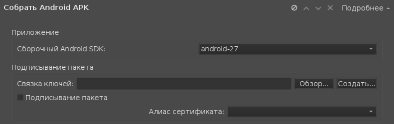

Подготовка Androi-приложения для публикации
Криптографические ключи
Для операционной системы Android существует требование, чтобы каждое устанавливаемое из Маркета приложение обязательно было подписано сертификатом разработчика (для отладочных сборок и сборок, распространяемых просто как APK-файл подпись необязательна).
Система подписки приложения используется как средство идентификации разработчика и как способ установления доверительных отношений между приложениями, разработанными одним и тем же разработчиком. Хорошая новость в том, что сертификат, который вы можете использовать, не обязан быть удостоверен центрами сертификации, допускается использование самоподписанных сертификатов. То есть, сертификат можно сгенерировать локально независимо ни от кого, и он будет принят Маркетом. Более детальную информацию о сертификатах в ОС Android можно найти на данной странице официальной документации.
Для подписывания приложения можно создать самоподписанный сертификат, удовлетворяющий следующим требованиям большинства систем распространения приложений (Google Market, F-Droid и т.д.):
Ключ можно создать с использованием приложения keytool, поставляемого вместе с Android SDK. Чтобы создать ключ, удовлетворяющий всем требованиям, необходимо выполнить следующую команду:
keytool -genkey -v -keystore my-release-key.keystore -alias release -keyalg RSA -keysize 2048 -validity 10000
Рассмотрим все опции команды боле детально.
Это стандартный низкоуровневый способ создания подписи. Обычно им пользуются Java-разработчики.
Для любителей C++, Qt и QML, генерация ключей имеет готовый интерфейс:

В современных версия Qt Creator можно в настройках проекта нажать "Связка ключей" - "Создать", и будет запрошен пароль на связку и каталог для сохранения сгенерированного файла. Как только нужно будет выпустить подписанный пакет, надо включить галку "Подписывание пакета" и выбрать файл связки ключей. В результате, в момент сборки будет запрошен пароль на связку ключей, после чего приложение будет подписано. То есть, сгенерированный APK-файл будет содержать электронную подпись.
|
Знаете ли вы, что: Приобрести различные аксесуары для мобильных телефонов можно на странице https://onecase.com.ua/pages/chehly_dlja_telefonov . Чехлы, подсумники, защитные стекла и прочая необходимая мелочь есть на этом сайте. |